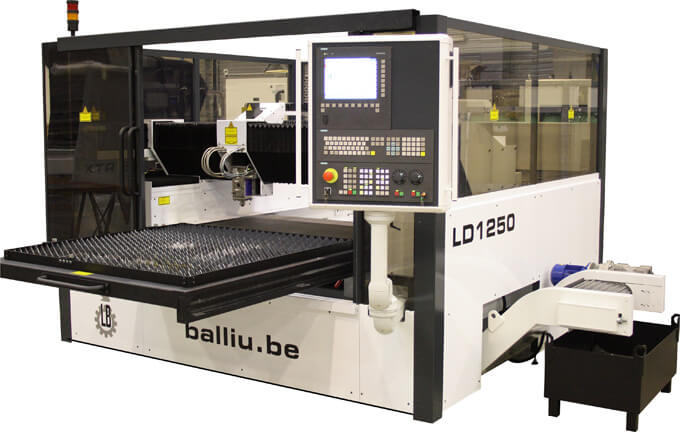
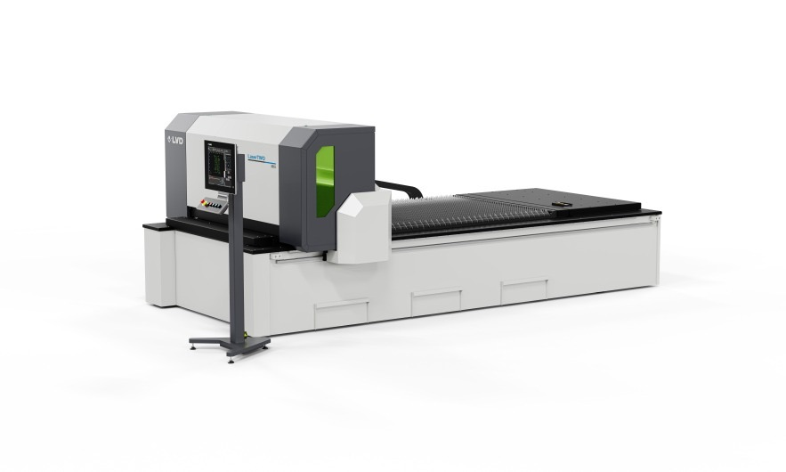
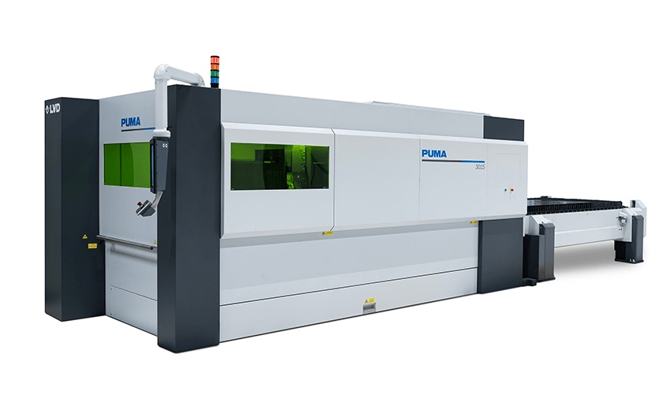
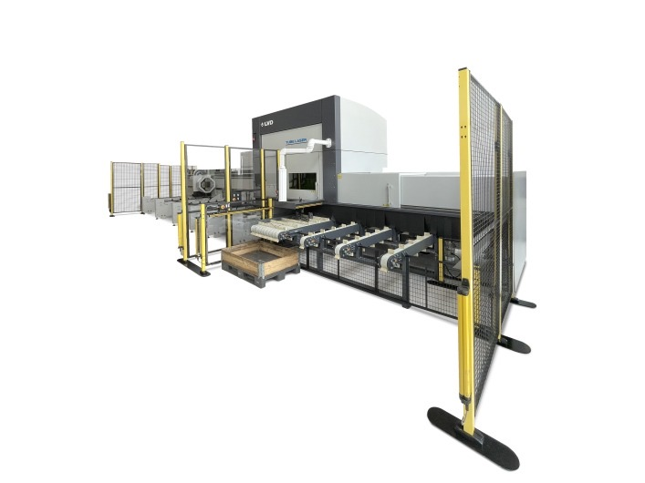

Установки лазерной резки
Для резки листовых заготовок, труб, профилей, а так же объемных деталей
Лазерные станки Balliu и LVD
Мы поставляем лазерные станки двух производителей: Balliu и LVD. Выберите производителя и серию станка под ваши материалы, толщины и объёмы.
Лазерные станки Balliu
Лазерная резка листа, труб и объёмных деталей

BA
Бюджетный трёхосевой лазерный центр для листа: CO₂ или fiber-источник, смена столов, рабочая зона 1525 × 3050 мм.
Подробнее и характеристики

Rabbit
Высокоскоростная установка с линейными приводами: ускорение 35 м/с² и скорость до 310 м/мин.
Подробнее и характеристики
Станки на заказ
Специальные станки Balliu под ваши задачи: нестандартные рабочие зоны и мощности источника.
Подробнее и характеристикиО Balliu: линейка, комплектующие и преимущества
На сегодняшний день является одним из самых востребованных способов разделения (резания) заготовок из различных материалов, таких как - конструкционные стали, алюминий, нержавеющая сталь, медь, латунь, титан, а так же неметаллы - дерево, кожа, и т.д. Наша компания является официальным дилером Бельгийской компании Balliu - одного из лидеров в области производства установок лазерной резки. Производственная линейка Balliu включает в себя следующие модели машин:
- BA, Rabbit – машины для обработки листа
- LM – машины для обработки листа с возможностью обработки трубы а также для обработки проката большой длины
- SLF, LPC, LTC – машины для обработки трубы и профиля
- Minicut – машины для высокоточной обработки заготовок малого размера
- Minotaur и Megacut – машины для 5-ти и более осевой обработки листа 3D заготовок, резки и сварки
- LCF – машины для наплавки 2D и 3D деталей
Помимо этого, компания создает специальные машины под нестандартные требования заказчика. Главным конкурентным преимуществом компании, помимо постоянного внедрения новых технологий, является их принцип разработки оборудования, требующего минимальных сервисных затрат и отличающегося высокой надежностью. В оборудовании Balliu используются комплектующие только от ведущих мировых производителей:
- Система ЧПУ и линейные моторы Siemens
- Лазерный источник Rofin-Sinar
- Режущая головка Precitec
- Система охлаждения Hyfra Pedia
- Фильтровентиляционная система Donaldson Torit
Преимущества конструкций лазерных комплексов Balliu.
- Щелевые источники CO2 компании Rofin-Sinar отличаются самым высоким качеством луча в своем классе К≥0,95, с параметром ТЕМ 00, что позволяет достигать самой высокой плотности мощности луча и, как следствие, более высокой производительности всего комплекса в целом. Отсутствие турбины, большого количества отражающей оптики, а так же встроенной premix баллон с лазерным газом сводит к минимуму сервисные затраты, приравнивая их к сервисным затратам по обслуживанию оптико-волоконных источников
- Оптико-волоконные источники Rofin-Sinar могут поставляться с блоками FFC, позволяющим быстро подключить волокно к источнику без выпаивания, и блоком FFS, позволяющим подключать к одному источнику до 4-х волокон
- Линейные приводы обеспечивают максимальные скорости перемещений, высокую динамику и при этом высокую точность позиционирования с практически полным отсутствием люфта при смене направлений. К тому же данный вид привода вообще не требует обслуживания, т.к. перемещение портала на магнитной подушке исключает механический износ компонентов
- Прочная рама, частично заполненная полимерным бетоном, что делает ее вдвое тверже, чем, если бы она была изготовлена только из металла – тем самым достигается очень стабильная безвибрационная конструкция
- Гибкость в конструировании лазерного комплекса (по желанию клиента возможна зеркальная конструкция, смена паллет с любой стороны, подгонка под планировку цеха клиента и т.д.)
- Гибкость в установке (резонатор CO2 может быть расположен параллельно или перпендикулярно к раме машины (экономия площади), другие компоненты также могут быть нестандартно расставлены по желанию клиента)
Лазерные станки LVD
Волоконные лазеры для листа, труб и XXL-форматов

LaserTWO
Волоконный лазер для листа без лишних опций: источники 3, 6 или 12 кВт, форматы до 4050 × 2035 мм.
Подробнее и характеристики
Puma
Быстрая обработка широкого круга материалов и толщин, источники до 20 кВт.
Подробнее и характеристики

TL 8525
Полнофункциональный трубный лазер для высокой производительности: трубы до 250 мм и длиной до 8200 мм.
Подробнее и характеристики
TL 2665
Гибкий трубный лазер для круглой, квадратной и прямоугольной трубы, швеллера и уголка.
Подробнее и характеристикиЧитайте в блоге: Лазер или плазма: как выбрать технологию резки металла
Не нашли нужный станок?
Напишите или позвоните нам: подберем оборудование под вашу задачу и организуем поставку.